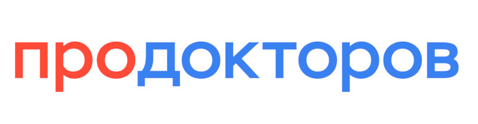

Отзывы пациентов
Благодарности от тех, кому мы уже помогли

Мы на «ПроДокторов»
Больше отзывов о Клинической больнице Святителя Луки и наших врачах — на независимом портале «ПроДокторов». Там же вы можете оставить свой отзыв.
Читать отзывы на ПроДокторовБлагодарности пациентов
Слова тех, кому мы уже помогли
Уважаемый Тимур Марленович! Выражаю Вам, всем сотрудникам отделения и особенно врачу-урологу Сытник Д.А. сердечную благодарность за оперативное лечение по удалению камней из почек. Операции были проведены на высоком профессиональном уровне и с высоким качеством. В настоящее время чувствую себя хорошо. Большое Вам человеческое спасибо.
Спасибо огромное всему коллективу замечательной клиники! От души благодарю зав. отделением Топузова Тимура Марленовича за высочайшее качество проведённой мне непростой операции. И отдельно хочу поблагодарить Максима Леонидовича Горелика — отличный, знающий и заботливый врач, которого ожидает большое будущее!
Огромное спасибо всему коллективу больницы за всё: лечение, уход, консультации, процедуры, санитарное состояние отделения. Одно из главных качеств врача — профессионализм и понимание. И это ещё раз доказали Иван Сергеевич Пазин и Максим Леонидович Горелик. И, конечно, Сергей Валерьевич Попов — Вы можете гордиться своим детищем!
Отличная клиника, современное оборудование, душевный медперсонал. Особенная благодарность бригаде урологов-хирургов, проводивших мне операцию по удалению простаты: Попову Сергею Валерьевичу и Вязовцеву Павлу Вячеславовичу — специалисты высочайшего класса! После операции никаких последствий и осложнений. Успехов Вам в вашем нелёгком труде!
Огромное спасибо руководству клиники, нач. урологического отделения, врачу-хирургу Малевич С.М., медицинским сёстрам отделения Игнатьевой Наталье, Якобсон Полине, Гук Анастасии, технической сотруднице Ирине Геннадьевне. Это лучшая клиника из всех, что мне пришлось в жизни посетить. Всем огромная благодарность.
17.04.2022Хочу выразить огромную благодарность Пазину Ивану Сергеевичу за внимательное отношение и решение проблемы МКБ. Очень долго и тщательно выбирала хирурга для операции по удалению камня. Когда попала на приём к Ивану Сергеевичу, выбор стал очевиден! Отличный специалист, профессионал своего дела: поддержал, успокоил и ответил на все интересующие вопросы. Операция прошла отлично, и через несколько дней проблема была решена. Даже после выписки врач всегда оставался на связи, следил за моим состоянием и предоставил все необходимые рекомендации по восстановлению. Рекомендую!
У меня пошёл камень из почки и застрял по дороге в мочеточнике. Сильные боли, почка начала отекать. Моей проблемой занялся Дэнис Михайлович Альпин. Сначала он установил мне стент, а через некоторое время — удалил и камень. Всё прошло отлично, никаких осложнений. Искреннее спасибо Дэнису Михайловичу за профессионализм и человеческое отношение!
май 2026По рекомендации я обратился с диагнозом «рак почки». Павел Вячеславович Вязовцев — грамотный специалист, добрый, отзывчивый человек. Провёл сложнейшую операцию без осложнений, всё доступно объяснил, поддерживал на всех этапах лечения. Павел Вячеславович — хирург от Бога! Огромная благодарность ему и всему коллективу отделения.
27.03.2024Задайте вопрос специалисту
Опишите свою ситуацию — специалисты центра ответят вам в рабочее время.